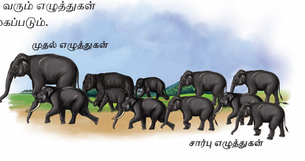

எழுத்துகள் இரண்டு வகைப்படும். அவை,
1, முதல் எழுத்துகள்
2, சார்பு எழுத்துகள்
உயிர் எழுத்துகள் பன்னிரண்டு, மெய்யெழுத்துகள் பதினெட்டு ஆகிய முப்பது எழுத்துகளும் முதல் எழுத்துகள் ஆகும். பிற எழுத்துகள் தோன்றுவதற்கும் இயங்குவதற்கும் முதற்காரணமாக இவை இருக்கின்றன. எனவே, இவற்றை முதல் எழுத்துகள் என்கிறோம்.

முதல் எழுத்துகளைச் சார்ந்து வரும் எழுத்துகள் சார்பெழுத்துகள். இவை பத்து வகைப்படும்.
1, உயிர்மெய்
2, ஆய்தம்
3, உயிரளபெடை
4, ஒற்றளபெடை
5, குற்றியலிகரம்
6, குற்றியலுகரம்
7, ஐகாரக்குறுக்கம்
8, அவ்காரக்குறுக்கம்
9, மகரக்குறுக்கம்
10, ஆய்தக்குறுக்கம்
இவ்வகுப்பில் உயிர்மெய், ஆய்தம் ஆகிய இரண்டு சார்பெழுத்துகள் பற்றிக் காண்போம்.
• மெய் எழுத்துகளும் உயிர் எழுத்துகளும் ஒன்றுடன் ஒன்று சேர்வதால் உயிர்மெய் எழுத்துகள் தோன்றுகின்றன.
• உயிர்மெய் எழுத்தின் ஒலிவடிவம் மெய்யும் உயிரும் சேர்ந்ததாக இருக்கும்.
• வரிவடிவம் மெய்யெழுத்தை ஒத்திருக்கும். ஒலிக்கும் கால அளவு உயிர் எழுத்தை ஒத்திருக்கும்.
• முதல் எழுத்துகளைச் சார்ந்து வருவதால் இவை சார்பெழுத்து வகையுள் அடங்கும்.
• மூன்று புள்ளிகளை உடைய தனித்த வடிவம் பெற்றது.
• முப்புள்ளி, முப்பாற்புள்ளி, தனிநிலை, அஃகேனம் என்ற வேறு பெயர்களும் இதற்கு உண்டு.
• நுட்பமான ஒலிப்புமுறையை உடையது.
• தனக்கு முன் ஒரு குறில் எழுத்தையும் தனக்குப்பின் ஒரு வல்லின உயிர்மெய் எழுத்தையும் பெற்றுச் சொல்லின் இடையில் மட்டுமே வரும்.
• தனித்து இயங்காது.
• முதல் எழுத்துகளாகிய உயிரையும், மெய்யையும் சார்ந்து இயங்குவதால் ஆய்த எழுத்து சார்பெழுத்து ஆகும்
1, முதல் எழுத்துகள், சார்பு எழுத்துகள் தொடர்பைப் பற்றி விவாதிக்க.
2, முதல் எழுத்துகள் மட்டும் இடம்பெறும் சொற்களை எழுதுக.
எடுத்துக்காட்டு, ஆம்
3, முதல் எழுத்துகள் இடம் பெறாத சொற்களை எழுதுக.
எடுத்துக்காட்டு, குருவி
1, முதல் எழுத்துகள் என்பவை யாவை, அவை ஏன் அவ்வாறு அழைக்கப்படுகின்றன.
2, சார்பெழுத்துகள் எத்தனை, அவை யாவை
3, சொற்களில் ஆய்த எழுத்து எவ்வாறு இடம்பெறும்